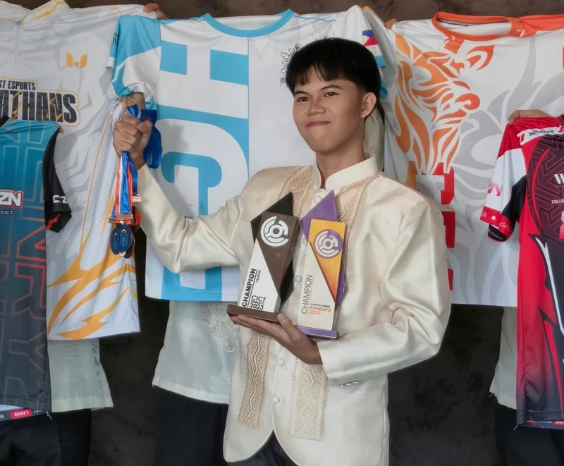

about

- BASED IN
- Iloilo, Philippines
- CURRENTLY
- Looking for Opportunities
- STUDIED
- BS Information Technology, WVSU
- FOCUS
- AI, Automation, Creatives, Support
I build with purpose and design with people in mind.
I’m Daniel Noel, an IT graduate with hands-on experience in systems engineering and a foundation in networking and security. I enjoy figuring out how things work, then using that understanding to build workflows, interfaces, and visuals that serve a clear purpose.
That curiosity pushes me to ask better questions, connect ideas across disciplines, and find simpler ways to solve real problems. I care about how the result looks, how it works, and how easily someone can use it. Each project is a chance to learn a new tool, sharpen a skill, and make something that solves a problem or communicates an idea.
now
- Deepening my practice in AI systems and agentic workflows, with security and judgment built in.
- Building creative work that makes technical ideas easier to see, use, and share.
- Working toward my own goals while helping others reach their potential, and looking for opportunities to put that into practice.
TOOLS I REACH FOR
LANGUAGES & SCRIPTING
- HTML
- CSS
- Python
- Dart
- Bash
- JavaScript
- Java
- C#
AI & AUTOMATION
- n8n
- Zapier
- Claude Code
- Hermes Agent
- Codex
- Gemini
- Copilot
- Cowork
CREATIVE & AI
- Figma
- Canva
- Google Flow
- Photoshop
- ElevenLabs
- Midjourney
- CapCut
- Illustrator
- Notion
- Google Workspace
- MS 365
SYSTEMS & CLOUD
- Linux
- Windows
- VMware ESXi
- Proxmox
- KVM
- AWS
- Terraform
- Docker
- Kubernetes
- Rancher
- Harbor
- ArgoCD
- GitHub